By Steve Hoelzer (homepage | e-mail)
2005-Apr-18
Abstract:
A discussion of MPEG-2 coding techniques and a MATLAB program that demonstrates MPEG-2 style encoding and decoding.
A project for:
ECE 434, Multimedia Communication Networks
Professor Marilyn Andrews
University of Illinois at Chicago (UIC)
This zip file contains a complete archive of this project. It includes this web page, all images, and the code.
MPEG-2 is a video coding standard created by the Moving Picture Experts Group (MPEG) and finalized in 1994. Now, in 2005, it is the standard format used for satellite TV, digital cable TV, DVD movies, and HDTV. In addition, MPEG-2 is a commonly used format to distribute video files on the internet.
MPEG-2 is an evolution of MPEG-1, an earlier MPEG coding standard finalized in 1991. In fact, MPEG-2 is a superset of the MPEG-1 standards in that any MPEG-2 decoder can decode an MPEG-1 video. The additions to MPEG-2, therefore, are what make it a separate standard. The major additions are:
Support for higher resolution video
Support for interlaced video (as used on standard definition TV (SDTV))
Optimized for higher bit rates (typically 4 Mb/s and above, versus 1.5 Mb/s and below for MPEG-1)
Scalability via layered encoding to support a variety of quality levels/transmission bandwidths from one coded source
These features plus the base technology of MPEG-1 make MPEG-2 very attractive for video storage and transmission. The adjustable compression level allows for a significant reduction in bit rate with a just noticeable difference (jnd) in video quality or higher quality video for a fixed bit rate.
The MPEG-2 bit stream is basically just a series of coded frames one after the other. There are headers and time stamps to help decoders align audio and scrub through the bit stream, but those details are not important to understand the basic coding techniques. What follows is a brief description of MPEG-2 compression techniques without focusing on the exact specification of the bit stream.
Coding a frame in MPEG-2 format always begins by representing the original color frame in YCbCr format. The Y component represents luminance, while Cb and Cr represent chrominance differences. The three components of this color model are mostly uncorrelated so this transformation is a useful first step in reducing redundant information in the frame.
Another way to reduce the amount of information to be encoded is by taking advantage of human vision characteristics. Human eyes are much more sensitive to luminance than chrominance, so it is common to subsample both chrominance channels. The most commonly used subsampling format is denoted by 4:2:0, which means that chrominance sampling is decimated by 2 in the horizontal and vertical direction. Both chrominance channels are reduced to one quarter the original data rate in this way and the net effect is for total frame data rate to be cut in half with hardly any perceptual effect on image quality.
Note: All subsequent discussion and the MATLAB codec assume 4:2:0 chroma subsampling.
MPEG-2 uses block based coding. This means that a frame is not encoded as a whole; it is divided into many independently coded blocks. A macroblock is 16x16 pixels and is a basic unit of MPEG-2 coding. However, each macroblock is further divided into 8x8 pixel blocks. This results in 6 blocks per macroblock -- 4 for luminance and 2 for chrominance (assuming 4:2:0 chroma subsampling).
These block sizes were chosen in part because small sections of a frame of natural video (not computer generated or edited) are likely to be correlated. This correlation helps the next stages of encoding work more efficiently.
The next encoding step can vary from frame to frame. There are actually three possible types of frames, called I, P, and B frames. Each will be discussed separately below.
An I frame is intra or spatially coded so that all the information necessary to reconstruct it is encoded within that frame's segment of the MPEG-2 bit stream. It is a self contained image compressed in a manner similar to a JPEG image.
Each block of the frame is processed independently with an 8x8 discrete cosine transform (DCT). This transform generates a representation of each 8x8 block in the frequency domain instead of the spatial domain. Since, as noted above, the pixels in each block of a natural video are likely to be correlated, the resulting DCT coefficients typically consist of a few large values and many small values. The relative sizes of these coefficients represent how important each one is for reconstructing the block accurately.
The coefficients are then quantized using
( 8 x DCT )
QDCT = round( ---------- )
( scale x Qi )
where DCT and QDCT represent the coefficient matrices before and after quantization, scale is used to determine quality, and Qi is a perceptually weighted quantization table. The default value of Qi,
Qi = [ 8 16 19 22 26 27 29 34]
[16 16 22 24 27 29 34 37]
[19 22 26 27 29 34 34 38]
[22 22 26 27 29 34 37 40]
[22 26 27 29 32 35 40 48]
[26 27 29 32 35 40 48 58]
[26 27 29 34 38 46 56 69]
[27 29 35 38 46 56 69 83]
weights low frequency content higher that high frequency content, mimicking the response characteristics of a human eye. The quality scalar, scale, can be any value from 1 to 31. If desired, MPEG-2 allows the value of scale to be mapped non-linearly to higher compression levels, with a maximum of 112.
This quantization process is lossy because the true floating point values of the DCT coefficients are not preserved. Instead, the quantized coefficients are just an approximation of the true coefficients and the quality of the approximation determines the quality of the frame reconstructed from this bit stream.
Next the 8x8 block of quantized coefficients is arranged into a vector by indexing the matrix in zigzag order given by
[ 1 2 6 7 15 16 28 29]
[ 3 5 8 14 17 27 30 43]
[ 4 9 13 18 26 31 42 44]
[10 12 19 25 32 41 45 54]
[11 20 24 33 40 46 53 55]
[21 23 34 39 47 52 56 61]
[22 35 38 48 51 57 60 62]
[36 37 49 50 58 59 63 64]
This ordering is approximately low frequency to high frequency for a very important reason: small blocks (8x8) of natural video are likely to contain mostly low frequency content. This ordering tends to group non-zero terms at the front of the vector and zero terms at the end. This type of distribution is beneficial to the coding that follows.
The final steps for coding an I frame are lossless with respect to the quantized DCT coefficients. For each block, the DC coefficient is differentially coded with the last block's DC term. The AC coefficients are run-length encoded (RLE) and then Huffman coded. The result is a compact bit stream from which the quantized DCT coefficients can be reconstructed perfectly.
A P frame is inter or temporally coded. That means it uses correlation between the current frame and a past frame to achieve compression. The MPEG-2 standard dictates that the past frame must be an I or P frame, but not a B frame.
Temporal coding is achieved using motion vectors. The basic idea is to match each macroblock in the current frame with a 16x16 pixel area in the past reference frame as closely as possible. Closeness here can be computed in many ways, but a simple and common measure is sum of absolute differences (SAD). The offset from the current macroblock position to the closest matching 16x16 pixel area in the reference frame is recorded as two values: horizontal and vertical motion vectors.
The search to find the best motion vectors is performed in the luminance channel only. Whatever motion vector is found then applies to all three channels of that macroblock.
There are a few common algorithms for finding motion vectors, such as:
Sequential search -- This is a brute force method where every possible match is tested within a given search window.
Logarithmic search -- Search 9 locations centered around the original macroblock, then keep repeating the search centered on the best match of the last iteration. At each iteration the search window gets smaller until the desired fidelity is reached.
Hierarchical search -- The macroblock and search window are decimated once or more, and searching takes place in order of lowest to highest resolution so the motion vectors can be refined at every step.
These motion vectors are a simple way to convey a lot of information, but are not always a perfect match. To give better quality reconstruction, error between the actual macroblock and the predicted macroblock is then encoded. This coding of the residual is almost exactly the same as I frame coding. In fact the only difference is that the quantization equation becomes
( 8 x DCT )
QDCT = floor( ---------- )
( scale x Qp )
where floor is used in place of round, and Qp is a different weighted quantization table. The default for Qp is
Qp = [16 16 16 16 16 16 16 16]
[16 16 16 16 16 16 16 16]
[16 16 16 16 16 16 16 16]
[16 16 16 16 16 16 16 16]
[16 16 16 16 16 16 16 16]
[16 16 16 16 16 16 16 16]
[16 16 16 16 16 16 16 16]
[16 16 16 16 16 16 16 16]
During reconstruction, the residual is decoded and added to the motion vector predicted macroblock.
A B frame is simply a more general version of a P frame. Motion vectors can refer not only to a past frame, but to a future frame, or both a past and future frame. Using future frames is exactly like a P frame except for referencing the future. Using past and future frames together works by averaging the predicted past macroblock with the predicted future macroblock. The residual is coded like a P frame in either case.
Encoded frame size greatly depends on the quantization scale value, but the relative frame sizes demonstrate how well temporal coding can work. In general, a P frame will be 10% the size of an I frame, and a B frame will be only 2% of the size of an I frame.
The ordering of I, P, and B frames is fairly flexible in MPEG-2. The first frame must always be an I frame because there is no other data for a P or B frame to reference. After that, I, P, and B frames can be mixed in any order.
Experimentation has shown that a repeating sequence such as
I B B P B B P B B P B B
yields good quality and compression. Remember that the P frames reference the last I or P frame and the B frames reference the closest past and future I or P frames. Due to those requirements, the frames must be coded and transmitted out of display order. The ordering would be
I P B B P B B P B B I B B
where the second I frame is actually from the next sequence of frames.
For this project I implemented a MPEG-2 style codec in MATLAB. It encodes a souce movie into MPEG data for I and P frames (B frames are not implemented) and then can decode the MPEG data back into a movie. It is MPEG-2 style because it does not produce a MPEG-2 compliant bit stream. However, the important lossy quantization steps are reproduced faithfully so it is a valid example from which to learn about and experiment with MPEG-2 coding.
The code for this project is organized into many functions that mostly reside within a single m-file. The top-level function performs four major steps:
Load the movie to encode.
Encode the movie and return MPEG data.
Decode the MPEG data and return the reconstructed movie.
Save both movie versions and MPEG data to disk for later viewing and/or analysis.
This simulation is built with variables controlling much of the coding process to allow experimentation. Some of the parameters that can be easily adjusted are the choice of movie to encode, frame type pattern (ex: I P P I P P), quantization scale factor, sequential or logarithmic motion vector search, and motion vector search window size.
As an example of this simulation's capabilities, I encoded and decoded 10 frames of a movie with the quality scale set to 31. For all 10 frames, the original, reconstructed, and error images are shown in the table below. These frames show only the luminance signal even though the source movie was color. Note that the error shows positive and negative error as differences from middle gray.
Middle gray reference frame (indicates no error):
| Frame | Original | Compressed | Error |
| 1 | 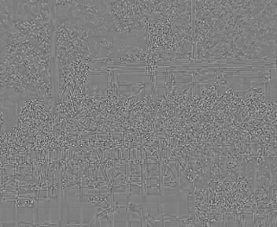 | ||
| 2 | 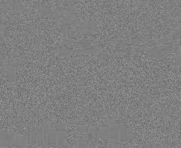 | ||
| 3 | |
||
| 4 | 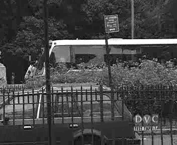 | 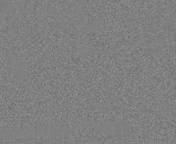 | |
| 5 | 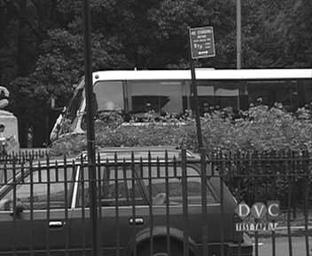 | 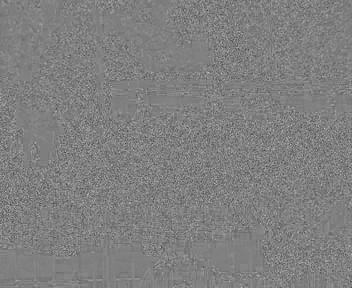 | |
| 6 | 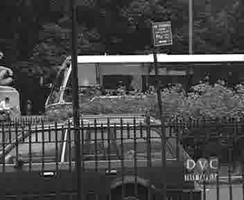 | 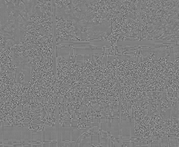 | |
| 7 | 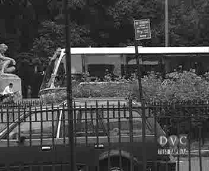 | 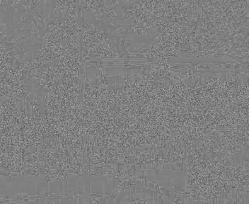 | |
| 8 | 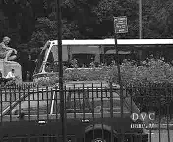 | |
|
| 9 | 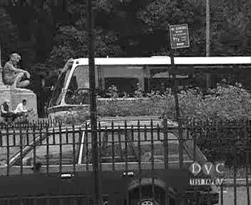 | 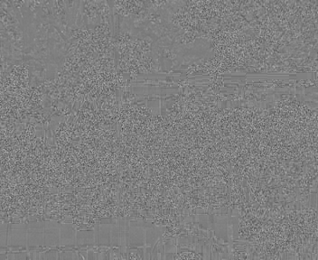 | |
| 10 | 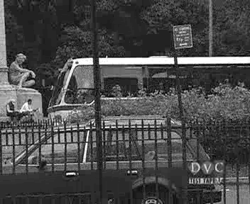 | 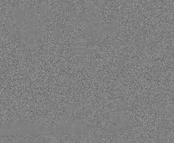 |
For this test, I encoded the same frame as an I frame at many quality levels.
Original frame for reference:
Results:
| Scale = 1 |
Scale = 8 |
| Scale = 16 |
Scale = 32 |
| Scale = 64 |
Scale = 112 |
At the highest quality, with scale = 1, I can't see any difference between the original and reconstructed frames. With scale = 8, I can see very minor differences in smoothly shaded parts of the frame like the bus windows. As scale increases further, blocking artifacts appear due to the high frequency content getting reduce more and more. At the lowest quality, with scale = 112, there is a new and interesting effect. Besides being very blocky, the frame appears to be mostly grayscale. This occurs because the colors are not saturated enough so they are quantized to zero during encoding. Then reconstruction faithfully reproduces a block with no chrominance information.
When I first got the motion vector search working for P frames, I tried a logarithmic search with a beginning step size of 16. Looking at the resulting motion vectors showed that my algorithm was estimating the frame motion poorly.
My test video mostly pans to the left and has a fixed logo in the bottom right corner. My motion vectors were sometimes correct, but sometimes backwards, and sometimes even had a vertical component. See the motion vector plot below. Obviously it could be better.
Step size = 16
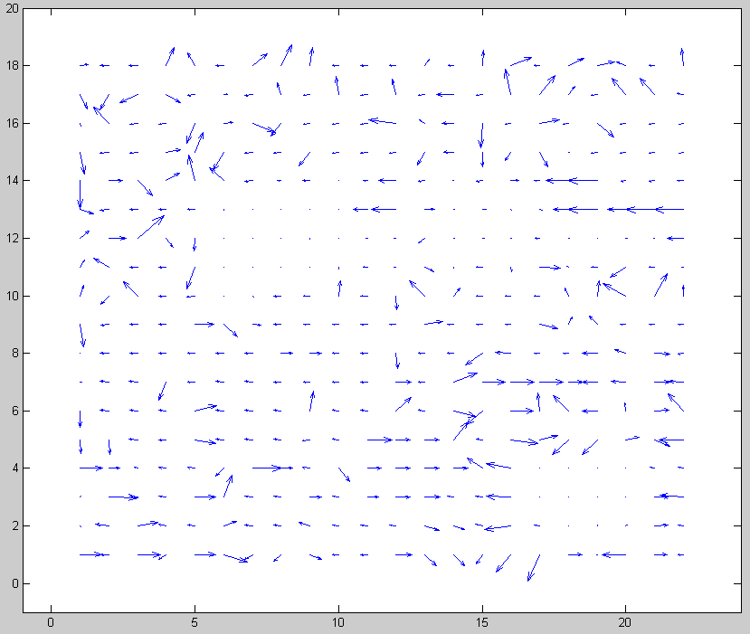
I tried reducing the beginning step size from 16 to 8 and that simple change corrected nearly all of the motion vectors. Now I realize that a step size of 16 is too large to do matching with a 16x16 macroblock. There is no overlap between the true macroblock location and the test areas. A video panning at about 8 pixels per frame would not correlate well with any of the test areas so an error is likely. Making an error in the first step of a logarithmic search significantly decreases the chances of finding a good motion vector.
Below are the improved motion vectors for beginning step size = 8. Notice how consistent they are throughout the frame.
Step size = 8
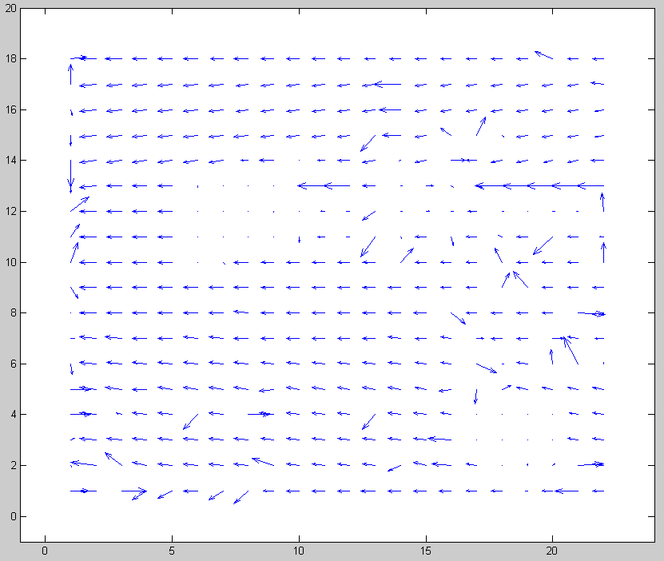
The really interesting point about this find is that a slower or faster panning video probably would not have shown this problem. It just happened that my test video panned at about 8 pixels per second, which is the worst case.
I was interested to see what kind of visual information gets encoded in the residual portion of a P frame and, conversely, how well a frame can be represented using just motion vectors. To see this, I encoded a P frame, then decoded it twice: once with the residual added, and once without.
Original frame:
| Decoded with residual: |
Decoded without residual: |
The predicted frame without residual is a good match except for some very obvious blocking artifacts. For example, see the red sign above the bus or iron bars below the 'DVC' logo. This type of blocking error makes sense considering that without residual added, the frame is made up completely of 16x16 blocks from the last frame. This video, with slow and consistent panning, is probably an ideal choice for this experiment since there is little relative motion within the frame.
The final test I conducted was to profile my code and see how long encoding and decoding takes for different operations.
My first test was to compare I frame coding vs P frame coding (with a logarithmic motion vector search). The results are averaged over 30 frames.
| Frame type | Encode time (sec/frame) | Decode time (sec/frame) |
| I | 2.1 | 1.3 |
| P | 1.8 | 1.3 |
The results were a surprise to me. Coding a P frame requires the same operations as an I frame plus the motion vector search. I thought the I frame coding would be much faster. The only possible explanation I can think of is that the residual error of P frames has many zeros and therefore can be processed by the DCT much faster.
Another execution time test I conducted was sequential versus logarithmic motion vector search. Again, these results were averaged over 30 frames and both methods used a maximum search window of +/- 15 pixels.
| Search type | Encode time (sec/frame) | Decode time (sec/frame) |
| Sequential | 9.0 | 1.3 |
| Logarithmic | 1.8 | 1.3 |
Here the results make sense. The sequential search requires many more operations and therefore takes longer; about 5 times as long in this case.
As a final note on execution time, decoding time was always consistent at 1.3 frames per second. That is because decoding is always exactly the same. There are no variables in the decoding process.
Feel free to download, modify, and use my code in any way. However, if you do something interesting, I'd like to hear about it.
mpegcode.zip - All code below in one zip file
mpegproj.m - Main function that implements MPEG style encoding and decoding
playlast.m - Load and play the last encoded video
quiverplot.m - Show motion vectors of P frames
figuresc.m - Easily create a non-standard sized figure
loadFileYuv.m - Process YUV video files into MATLAB movie format
loadFileY4m.m - Process Y4M video files into MATLAB movie format
convertYuvToRgb.m - Used by loadFileYuv.m and loadFileY4m.m to convert YUV data to RGB
conversion.mat - Color space transformation matrices needed by convertaYuvToRgb.m
progressbar.m - Graphically show progress as code runs
sec2timestr.m - Format elapsed time for display
Ze-Nian Li and Mark S. Drew, Fundamentals of Multimedia, ISBN: 0130618721, 2004, Pearson Education, Inc., Upper Saddle River, NJ, 07458
Berkeley Multimedia Research Center MPEG-2 FAQ
Test videos from Xiph.org
Test videos from Stanford
Code developed using MATLAB by The Mathworks
Report prepared for HTML publishing using Markdown by John Gruber (See the Markdown source of this page.)
Thanks to Alan Brooks and Greg Zomchek for peer review and many discussions about this project.
Thanks to Dawn and Hailey for having patience.